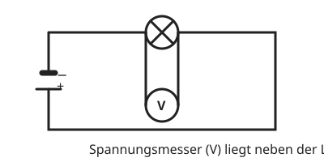

Die Spannung messen
Mit einem KI-Tutor lernen
Ein KI-Tutor erklärt dir diese Seite und hilft dir bei den Übungen. Wähl deinen Assistenten:
Mit Claude öffnen Mit ChatGPT öffnen Mit Mistral Vibe öffnen
Du nutzt dein eigenes Konto beim Anbieter. Der Assistent ist kein Angebot von lernapps.net: lernapps liefert nur Inhalte und Übungen. Die Wahl gilt für alle Seiten, nur auf diesem Gerät.
Das Messgerät
Die Spannung misst du mit dem Spannungsmesser, auch Voltmeter genannt. Sein Schaltzeichen ist ein Kreis mit einem V.
Der Spannungsmesser misst den Unterschied zwischen zwei Punkten. Darum schließt du ihn neben dem Bauteil an, dessen Spannung du wissen willst, mit je einer Leitung zu seinen beiden Anschlüssen. Man sagt: parallel.

Der Spannungsmesser liegt neben der Lampe und misst deren Spannung.
Quelle: eigene Zeichnung. Lizenz: CC-BY-4.0.So misst du richtig
Beginne auch hier mit dem größten Messbereich. Achte auf den Anschluss: Der Pluspol des Geräts kommt auf die Seite, die zum Pluspol der Batterie führt.
Strommesser und Spannungsmesser
Strommesser: in Reihe, misst die Stromstärke in Ampere. Spannungsmesser: parallel, misst die Spannung in Volt.
Übung
Übung
Lösung
Richtige Antwort: Strommesser – misst die Stromstärke in Reihe; Spannungsmesser – misst die Spannung parallel zum Bauteil
Der Strommesser sitzt in der Leitung. Der Spannungsmesser liegt neben dem Bauteil.
Mehr dazu:
Übung
Lösung
Parallel zur Lampe, an beide Anschlüsse. richtige Antwort
So misst er den Unterschied zwischen den beiden Seiten der Lampe.
In Reihe vor der Lampe, in die Leitung.
So schließt man einen Strommesser an. Ein Spannungsmesser in der Leitung würde den Strom fast sperren.
Zwischen den Polen der Batterie, ohne die Lampe.
Dort misst du die Spannung der Batterie, nicht die der Lampe.
Spannung misst du parallel zu dem Bauteil, das dich interessiert.
Mehr dazu:
Übung
Lösung
Richtige Antwort: Die Aussage stimmt nicht.
Es gibt zwei Geräte. Der Strommesser liegt in Reihe, der Spannungsmesser parallel.
Mehr dazu:
Übung
Lösung
Volt richtige Antwort
Spannung wird in Volt (V) gemessen.
Ampere
Ampere ist die Einheit der Stromstärke.
Gramm
Gramm ist eine Einheit für die Masse.
Die Einheit der Spannung ist Volt.
Mehr dazu: